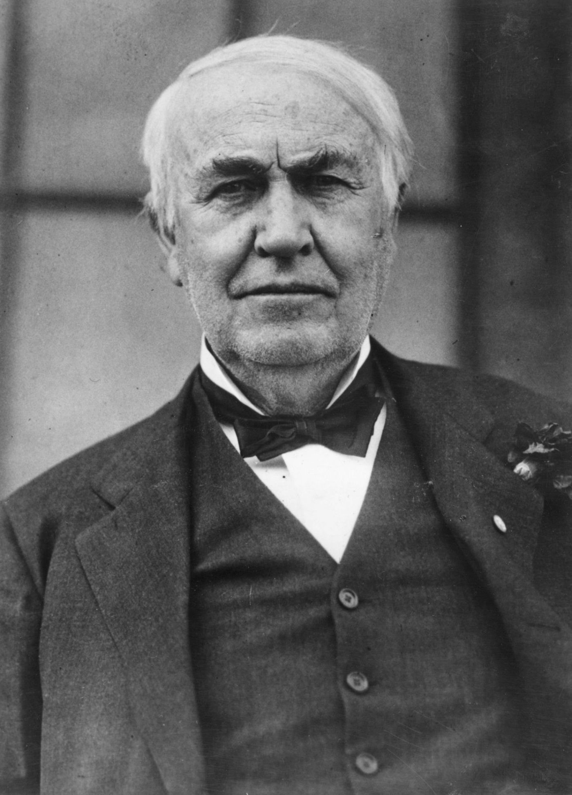

โทมัส อัลวา เอดิสัน(Thomas Alva Edison):

เชื่อเถอะว่าในบ้านของเราต้องมีสิ่งประดิษฐ์ของโทมัส อัลวา เอดิสัน กันทุกคนแน่นอน เพราะนักวิทยาศาสตร์ชาวอังกฤษ ซึ่งเกิดเมื่อวันที่ 11 กุมภาพันธ์ ค.ศ. 1847 (พ.ศ. 2390) และเสียชีวิตในวัย 84 ปี เมื่อวันที่ 18 ตุลาคม ค.ศ. 1931 (พ.ศ. 2474) คนนี้ เป็นเจ้าของสิทธิบัตรสิ่งประดิษฐ์มากมายที่เราใช้กันในชีวิตประจำวันกว่า 1,000 ชิ้น โดยเฉพาะการคิดค้นหลอดไฟที่เป็นผลงานชิ้นเอก แม้ว่าเขาจะมีปัญหาเรื่องการเรียนรู้ ทำให้อ่านหนังสือไม่ออกจนกระทั่งอายุ 12 ปี และบกพร่องเรื่องการฟังหลังประสบอุบัติเหตุบนรถไฟก็ตาม